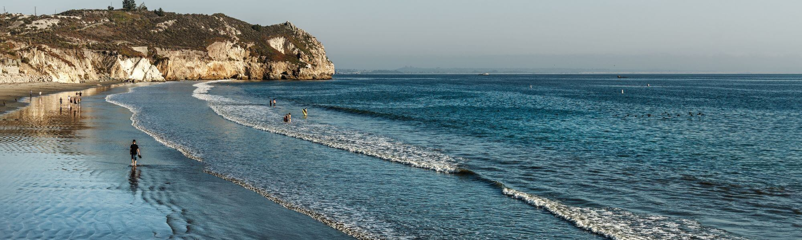

02 · Avila Beach
BEACH DAY, CLOSE TO HOME.
Avila Beach is about a 15-minute drive from San Luis Obispo and Cal Poly. The promenade, pier, paddleboarding, swimming and Bob Jones City-to-Sea Trail make it an easy Central Coast reset.
Explore Avila ↗